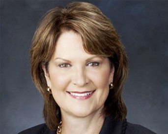

The 0 Party
Taking you from 0 to Hero!
Our Mission
To bust the myth that IT is a rapidly-changing industry. So many companies and government agencies have code that is four to five decades old, and that code will probably still be there for another four to five decades. You think progress is always assured? Then you clearly haven't played Star Wars KOTOR, where all the technology is the same even though the game takes place 1000 years before the movies. If the future is now, that means things will always be like they are now.
And why would you want progress? Company recruiters always tell us we need to be quick learners, but you're already spending four years having to learn. What if you didn't need to go outside the curriculum by doing personal projects, competitive programming, or research?
What if CS really was just a job?
Candidates
Madeline Beyer
 I'm running for either Secretary or Treasurer. I'm a helpful "supporting character" type, and even though I'm new, I already love being in ACM. I don't have much CS knowledge yet, but I'm enthusiastic, so I'll full heartedly serve ACM. Please elect me and give me justification for investing too much time in the club this next year.
I'm running for either Secretary or Treasurer. I'm a helpful "supporting character" type, and even though I'm new, I already love being in ACM. I don't have much CS knowledge yet, but I'm enthusiastic, so I'll full heartedly serve ACM. Please elect me and give me justification for investing too much time in the club this next year.
Our Technology Stack
It really isn't a stack, since most of our projects don't use that many different technologies.
We in fact do still learn new technologies, and by that we mean new to us. We just finally adopted Java, that way if COBOL ever does disappear, we'll be ready to deal with a new era of legacy code. Our other favorite technologies include:
- UML (can't code until you've made five flowcharts)
- C++
- Makefiles
- Perl
- x86 Assembly
- APL (MATLAB wishes it had a syntax like this)
- Netscape Navigator
The Ten Commandments of the 0 Party
- Thou shalt have no other editors before Vim.
- Thou shalt not make for yourself an artificial intelligence, or any other program that makes humans feel insecure.
- Thou shalt not take the name of Bjarne Stroustrup in vain, for he is weary of people pronouncing it wrong.
- Remember the seventh day, to keep it fun. Six days thou shalt code, but the seventh day is for playing Atari games.
- Honor thy parents, that they may keep financially supporting thee while in school.
- Thou shalt not kill without sudo privileges.
- Thou shalt not commit adultery to a Git repository.
- Thou shalt not steal talent from the South by hiring them to work in San Fran.
- Thou shalt not bear false testimony about your GPA.
- Thou shalt not covet thy friends at Google's sleep pods, nor their microkitchens, nor their intellectual freedom, nor their six-figure salaries.
What Execs are Saying about the 0 Party

I used to worry about what would happen to all our legacy code after the baby boomers retire, but these fine young people have been more than happy to take up Ada and FORTRAN.
-- Marilyn Hewson, CEO of Lockheed Martin
The 0 Party has shown that a 4-year degree is really the only way to make a living in tech (but maybe we should still start accrediting those hip coding bootcamps just to be safe).
-- Michael Milligan, CEO of ABET
Thanks to 0 Party programmers, Nintendo can still be successful even though our online features are over a decade behind our competitors'. Who needs a gaming headset when you have this.
-- Shuntaro Furukawa, President of Nintendo